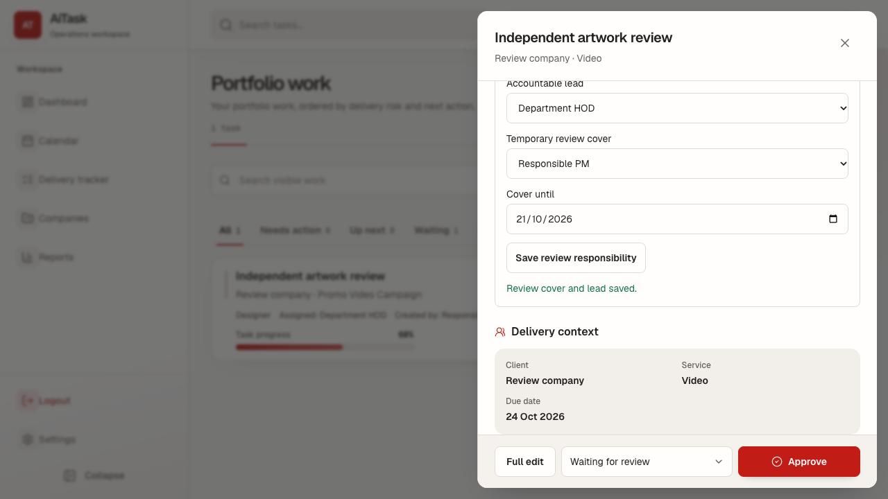
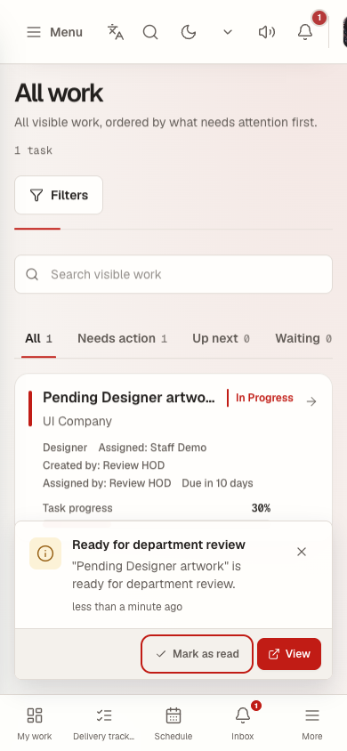
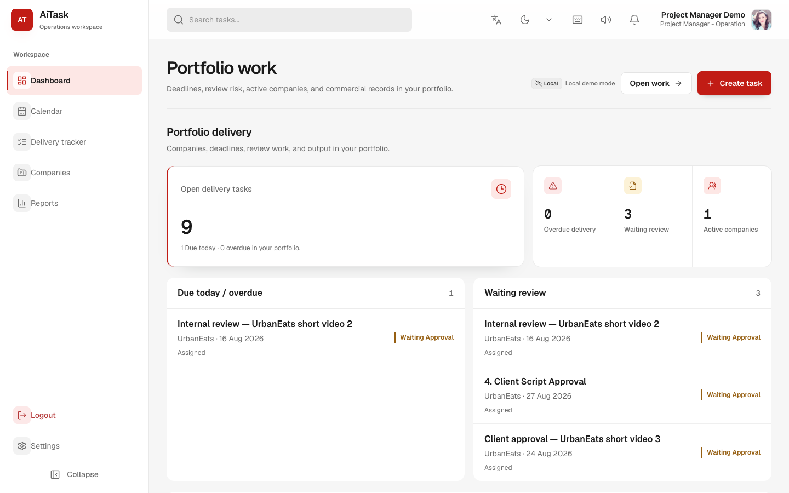

From Manual Operations
to Digital Transformation
The AiTask journey: connecting people, processes and management
A business transformation case studyStructure / Process / Applications / Data / Behaviour
operations
workflows
data
behaviour
Digital transformation is a progression
The value increases when technology changes the workflow, not just the format.
Digitization
Paper task lists become spreadsheets.
Information becomes digital.
Digitalization
Tasks move into an online workflow.
Existing work becomes easier to coordinate.
Digital transformation
The company works through connected roles, processes and data.
The operating model changes.
Start with the organization, not the software
A digital system should reflect how the organization needs to operate.
Structure creates clarity
The system starts with the people who own the work.
Company-wide visibility
Owns project direction
Owns departmental execution
Executes assigned work
PM → Department → HOD → Staff
Clients sit in the business context. Ownership stays inside the operating team.
Business discovery reveals the real work
The first deliverable is understanding how work actually moves.
Listen
Interview management and department leads.
Observe
Follow daily work and repeated handoffs.
Map
Identify approvals, bottlenecks and information flow.
Define
Agree what good execution should look like.
The design approach determines the outcome
Both approaches may use existing software. The difference is where the design begins.
Conventional implementation
- Identify a problem
- Purchase software
- Configure it
- Ask employees to use it
- Discover workflow gaps
First-principles transformation
- Understand structure
- Define responsibilities
- Redesign workflows
- Build or integrate applications
- Use data to improve behaviour
AiTask follows the second sequence.
The operating model becomes a digital workflow
AiTask translates role relationships into repeatable actions.
Creates task
Receives work
Assigns staff
Performs work
Checks output
Records result
Users take actions. The system manages states
A good workflow makes the next useful action obvious.
Example: review responsibility is visible in the task context.

One project can coordinate multiple departments
Digital transformation breaks information silos without removing accountability.
One shared outcome
Content
Brief and copy
Design
Visual assets
Video
Short-form edit
PM / client
Direction and review
Shared project context / Department ownership / Clear review path
Notifications replace repeated follow-ups
The right information reaches the right person at the right time.
Before
• Manager asks for an update
• Employee searches messages
• Review request may be missed
After
• Assignment notification
• Review request
• Revision or deadline update

Recurring services become structured operations
A monthly service is a cycle of commitments, not a pile of unrelated tasks.
Operational memory
• Previous deliverables remain visible
• Deadlines connect to the monthly plan
• Review and renewal history stays together
One organizational foundation, multiple applications
AiTask can be one operational application within a broader digital ecosystem.
foundation
Users / roles / departments / authorization
Potential integrations, not existing AiTask features
From operational data to organizational behaviour
Data matters when it helps people make a better next decision.
Activity
Staff completes a task
Data
Completion time, history and result are recorded
Insight
A recurring delay becomes visible
Decision
PM and HOD adjust allocation or timing
Behaviour
Assignments become clearer and intervention happens earlier
Improvement
The next project benefits from the change
Avoid using employee monitoring or punitive scoring as the primary example.
One operational record, different management questions
The same data becomes useful at different levels of the organization.
Role-based dashboards

Connected data needs governance and feedback
Better processes create better data. Better data enables better decisions. The loop continues.
The implementation journey is iterative
AiTask develops as the organization learns what needs to be clearer, faster or safer.
Process discovery
Roles and current work
Workflow design
Delegation and approval rules
Platform development
Projects, tasks and access
Operational integration
Reviews, notifications and cycles
Management intelligence
Visibility and dashboards
Stabilization and adoption
Testing, permissions and daily use
Iteration is part of the method, not a sign that the transformation failed.
Project delivery continues after launch
The repository record shows continuous build, release and stabilization work from 21 May to 23 October 2026, a calendar span of about five months.
Build and rollout
• Map roles and operational workflows
• Build project, task and approval flows
• Release client portal, notifications and service operations
• Stabilize permissions, sync and adoption
Ongoing support
• Ship fixes and workflow refinements
• Strengthen security, permissions and sync
• Validate monthly renewals and reporting
• Respond to real usage and regression findings
Calendar span is based on the project record. Actual person-hours and a fixed support SLA were not provided.
The operating model changes in practical ways
The comparison below describes intended improvements, not measured outcomes.
| Business area | Before | After |
|---|---|---|
| Task assignment | Messages and verbal instructions | Structured delegation |
| Responsibility | Sometimes unclear | Role-based ownership |
| Progress tracking | Manual follow-ups | Centralized task tracking |
| Approval | Scattered communication | Recorded workflow |
| Notifications | Manual reminders | Automated in-app alerts |
| Monthly services | Repeated manual coordination | Structured monthly cycles |
| Management reporting | Manual consolidation | Operational dashboards |
| Historical records | Scattered information | Centralized audit history |
Representative case-study framing; validate outcomes with client data before making performance claims.
Digital transformation is the redesign of how an organization operates
Structure creates clarity. Processes create consistency. Applications enable execution. Data creates visibility. Behaviour creates lasting transformation.
AiTask case study